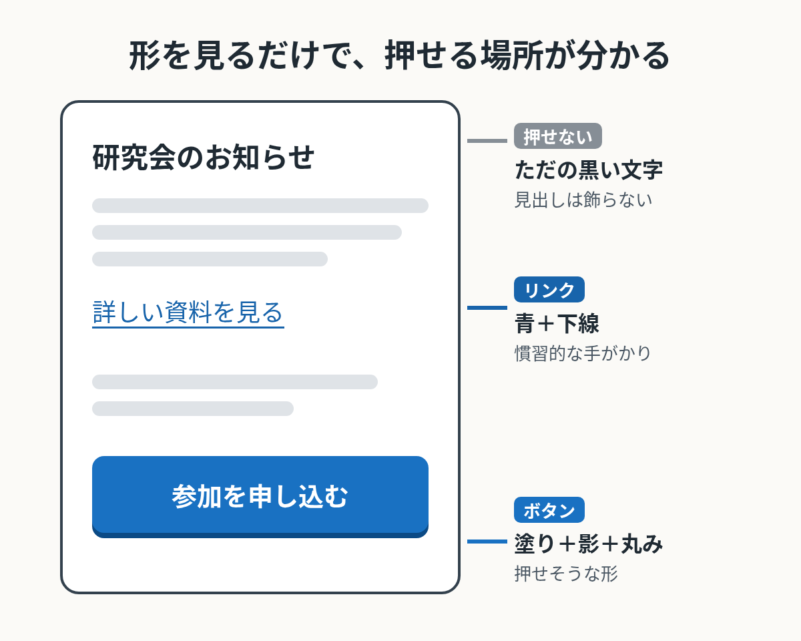
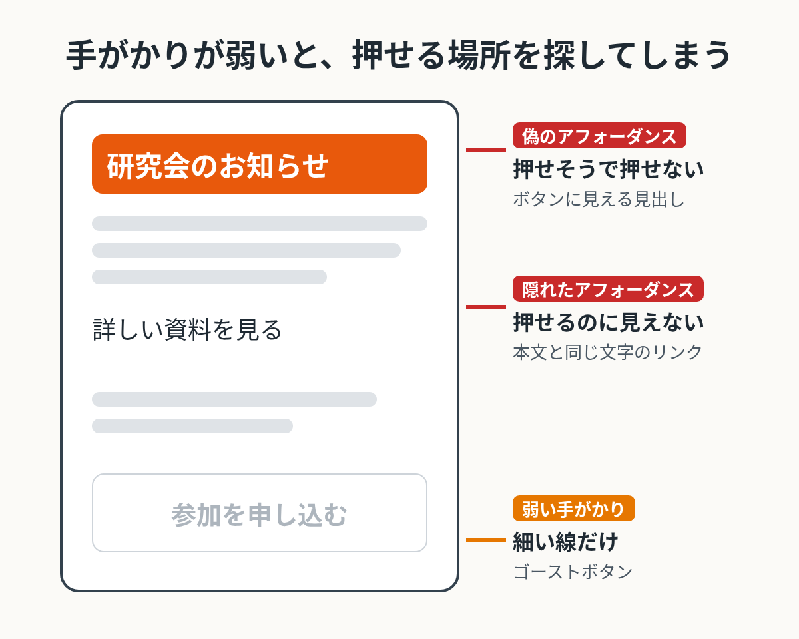

第3回 Web・アプリのUI
押せそうに見えるボタン、見えないボタン（画面の手がかり）


何がどう行為を誘っているか
画面の上では、押せるかどうかを決めるのはプログラムで、見た目ではありません。押せない場所もタップはできますし、押せる場所がどんな形をしていてもかまいません。だからこそ画面では「ここは押せます」と知らせる手がかり、つまりシグニファイアが大切になります。ノーマンは、画面について語られる「アフォーダンス」の多くは、実際には知覚されたアフォーダンスや慣習による手がかりだと整理しています。
塗りつぶした背景と丸み、わずかな影をもつボタンや、青い下線付きの文字は、長く使われるうちに「押せる」「クリックできる」と読み取られるようになった形です。
惜しい例・悪い例との対比
惜しいのは、本文と同じ見た目の文字にしたリンクや、細い線だけのゴーストボタンです。押せるのに押せるように見えない状態を、ゲイバーは隠れたアフォーダンスと呼びました。逆に、色付きの帯に乗った見出しのように、押せそうに見えて押せないものは偽のアフォーダンスです。
Nielsen Norman GroupのKate Moranが2017年に報告したアイトラッキング実験（71人）では、同じページで手がかりの強弱だけを変えて比べました。手がかりの弱い版では、ページを見ていた時間が平均22%長く、注視の回数も平均25%多くなりました。
使いどころのひとこと
スライドや研究サイトでは、「押せるもの」と「飾り」の見た目をはっきり分けましょう。押せる要素は塗りのボタンと下線のリンクなど決まった形にそろえ、見出しや強調には同じ形を使わないだけで、読み手の迷いが減ります。
出典
- Norman, D. A. (1999). Affordance, conventions, and design. Interactions, 6(3), 38–43.
- Gaver, W. W. (1991). Technology affordances. Proceedings of the SIGCHI Conference on Human Factors in Computing Systems (CHI '91), 79–84.
- Moran, K. (2017). Flat UI Elements Attract Less Attention and Cause Uncertainty. Nielsen Norman Group.